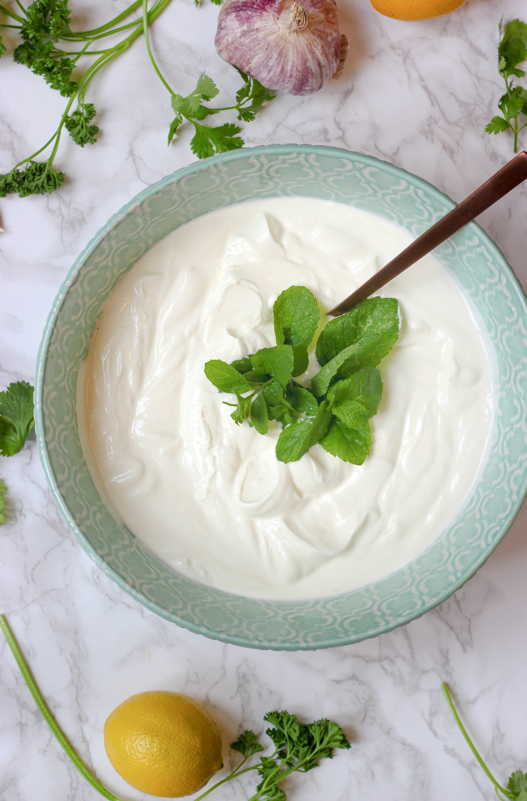

라리마 건강법이란 정해진 시간에 발효음식을 많이 먹고 건강잠을 지키는것. 거기다 체질에 맞는 곡식과 육류 먹는것. 정해진 시간에 먹는다는 것은. 아침에는 초생수와 요거트만 먹는다. 점심은 1시에 먹는다. 저녁은 6시 정도에 먹고 야식이나 간식은 먹지 않는다. 또한 자기 전에 소주잔 한 잔 정도의 요거트를 먹는다.
발효음식이라 함은, 일정한 재료를 전통적인 재래식 방식으로 제대로 만든 것만이 참된 발효음식이다. 건강잠은 가장 중요하다. 예로부터 잠은 보약이라고 했다. 성인은 10-11사이에 자서 8-9시간을 자야한다. 체질을 몰라도 라리마 건강법은 실천할 수 있다.